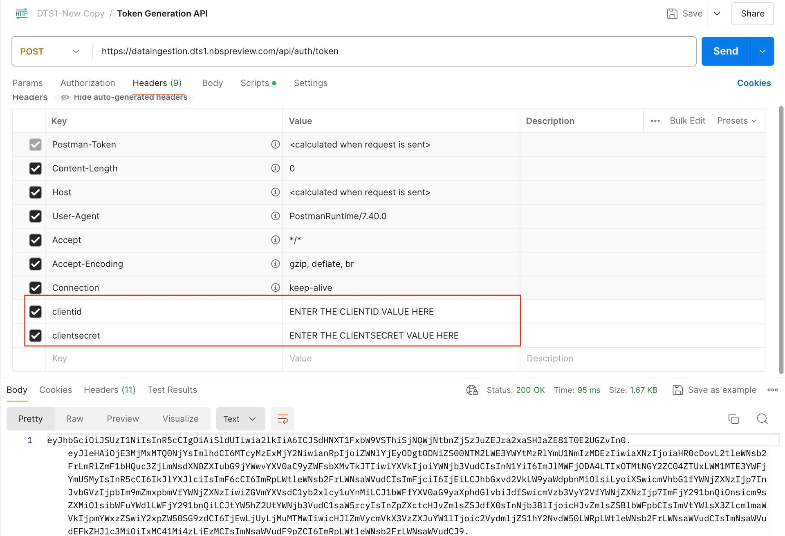
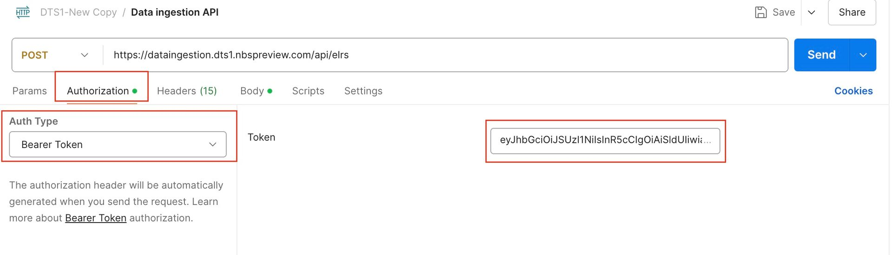
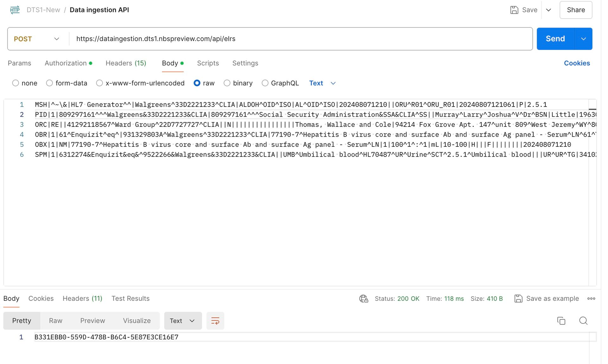
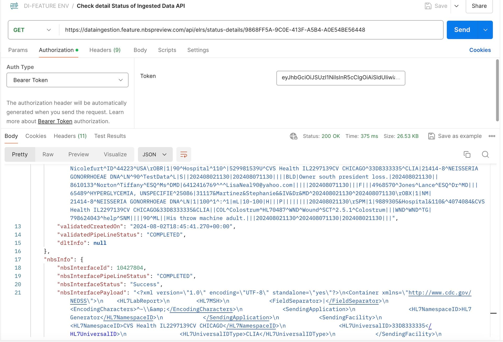

Smoke test for data ingestion
On this page
Overview
The Data Ingestion service is integrated with the Keycloak server to authenticate the DI service’s public API endpoints. As the Client Credentials Grant type flow is used for authentication in the DI Service, we require the Client Id and Client Secret values to create the JWT token and make API calls.
Prerequisite
- Keycloak server and the necessary configurations are setup.
- Installation of Postman application to test the end to end flow.
- If you already have postman application in your system, skip this step.
- Visit the official Postman website at www.postman.com and navigate to the Downloads section Download Postman
- Click on the link to download the version appropriate for your OS. Once the download is complete open and install it accordingly.
Scope
- Only ELR Data that are HL7 messages with ORU RO1 Data type are in scope.
- Only HL7 messages with versions 2.3.1 and 2.5.1 are in scope.
- The DI service supports the transmit of HL7 messages with FHS header segments.
Note: Posting the same HL7 message more than once is allowed, but be aware that due to a duplicate check, the validation will fail within the Data Ingestion system.
Run Data Ingestion Smoke Test
Open Postman application and click on import option. A pop up window shows up and then select New-Data-Ingestion.postman_collection.json file included in the release package and click on open to load Data Ingestion collection that has all API’s related to the Data Ingestion service.
Step 1: Token Generation API
Click on the Token Generation API in New-Data-Ingestion Postman collection. Update the clientid and clientsecret values and then click Send to generate a new token.

Note: Tokens expire after 1 hour. They must be regenerated using the same token endpoint after 1 hour or when they expire in order to make DI Service API calls.
Step 2: Ingesting Data API
Click on Ingesting Data API in New-Data-Ingestionpostman collection and then click on Authorization tab and select ‘Bearer Token’ as Type. Paste the token that was generated via Token Generation API in previous step into the token text box.
Click on the Headers section and enter the values within the clientid and clientsecret headers.
A sample HL7 message has already been added to the request body section. Click on Send button. UUID is displayed as a response. Please save this UUID which is useful to determine the status of the HL7 message.


Note: Give 10-20 seconds before checking the status of Ingested Data API in Classic NBS as it takes few seconds to generate an XML record into the NBS_Interface table after we post the HL7 message.
Step 3: Checking detailed status of Ingested Data API in Classic NBS
Click on the Checking Status of Ingested Data API in New-Data-Ingestionpostman collection and then click on Authorization tab. Paste the token that was generated via Token Generation API into the token text box.
Click on the Headers section and enter the values within the clientid and clientsecret headers. Within the API URL, append the UUID generated as part of the response from the Ingesting Data API. Click on Send button. By Default, all the status goes to QUEUED status.
The Classic Wildfly scheduler runs the batch job and processes this record. Currently, the scheduler is set to pick up and process the records every 2 minutes. So please wait for roughly 2 minutes and then click on Send button again. This time, the status should be changed to Success.
The below API provides the ELR Ingestion status:

This concludes the smoke test where the user posted the HL7 message via Data ingestion service which validated the incoming data.